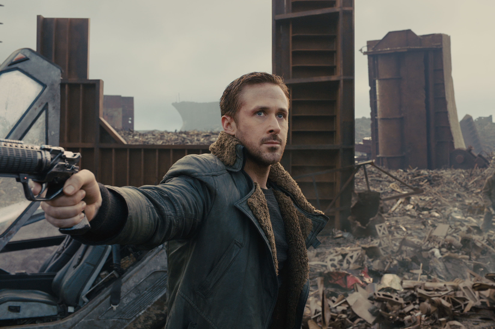
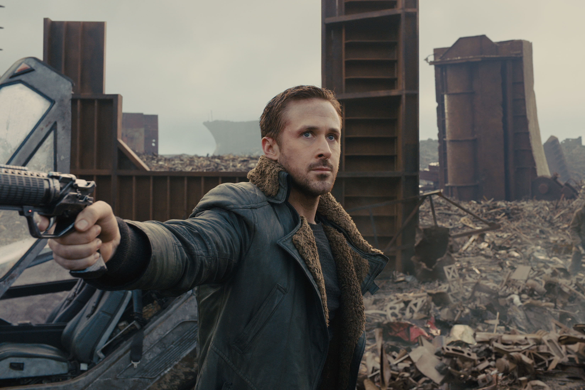

Культовый научно-фантастический фильм
«Бегущий по лезвию» — фильм, исследующий границы человечности, воспроизведённый в мрачном неон-городе будущего. Ниже — краткие сведения и галерея.
Действие разворачивается в Лос-Анджелесе 2019 года. Мир переполнен корпорациями, контролирующими технологии и жизнь простых людей. Репликанты — искусственные люди, созданные для тяжёлой работы, становятся источником философских и моральных вопросов: имеют ли они душу, право на свободу и личность?
Галерея
 

Короткие факты
- Режиссёр: Ридли Скотт
- Год: 1982
- Жанр: научная фантастика, нуар
Фильм основан на романе Филипа К. Дика «Мечтают ли андроиды об электроовцах?». Несмотря на скромный успех в прокате, со временем он обрёл культовый статус и считается одним из самых влиятельных научно-фантастических фильмов.
Главный персонаж
Рик Декард — бывший «бегущий по лезвию», охотник на репликантов. Его задача — находить и устранять сбежавших андроидов. Однако в ходе истории он начинает сомневаться в правильности своей миссии и видит в репликантах не просто машины, а существ, обладающих чувствами и стремлением к жизни.
Роль Декарда исполнил Харрисон Форд. Этот образ стал одним из самых знаковых в его карьере и символом киберпанк-культуры.